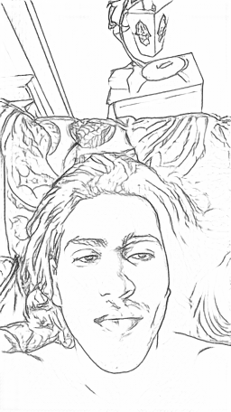

About me
I am of the belief that AI augments humanity and stand as a cornerstone to face the future, provided that we learn to harness its potential. By we, I mean humanity and not solely computer scientists. My deepest ambition is to make AI accessible beyond the boundaries of the engineering sphere. I want my models to benefit artists, doctors, entrepreneurs and anyone given access to a computer. On a slightly more personal aspect, I work every day to cultivate harmony between the two ventricles of the mind: Arts and Science.
I am a 24 years old French student currently working towards a Master of Science at Columbia. I am seeking a full time position starting January 2025 as a Research Engineer. where I could apply my knowledge in Machine Learning to a cause that aligns with my vision.